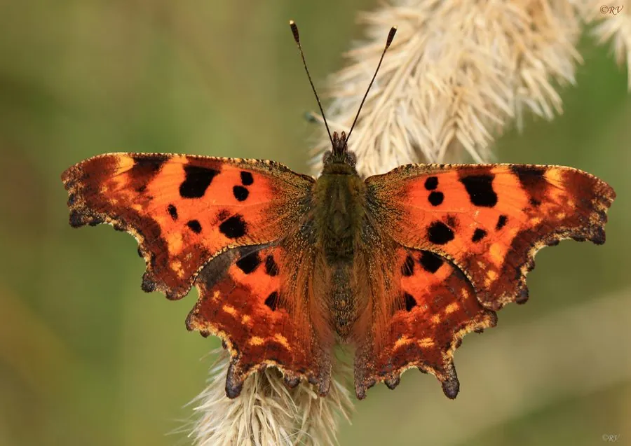

昆虫 · 动物界
白钩蛱蝶 Polygonia c-album

翅缘呈不规则锯齿状、翅腹面有白色钩状斑的蛱蝶，停歇时像枯叶，广布欧亚大陆，是著名的拟态蝴蝶。
- 分类
- 门节肢动物门纲昆虫纲目鳞翅目科蛱蝶科属钩蛱蝶属
- 栖息环境
- 林缘、灌丛、花园与河岸，荨麻和榆树附近
- 地理分布
- 欧洲和亚洲温带地区，包括中国北方
- 保护级别
- 暂无评估
物种志
白钩蛱蝶翅展约 5–6.5 cm，翅缘呈不规则的锯齿状，翅面橙褐色带黑斑，翅腹面为褐色，中央有一个白色钩状或 C 形小斑，因此得名。停歇时双翅合拢，整体像一片边缘破损的枯叶。
它生活在林缘、灌丛、花园和河岸，成虫喜欢吸食花蜜、树液和腐果汁液，秋季会大量取食以积累能量越冬。雌蝶把卵产在荨麻、榆树和醋栗等植物上，幼虫取食叶片。白钩蛱蝶广布欧洲和亚洲温带地区，一年发生多代，以成虫越冬；它的枯叶拟态和锯齿状翅缘是躲避天敌的重要方式，也是拟态研究的经典对象。它的蛹为褐色，挂在寄主植物的枝条上，外形像一片卷曲的枯叶，很难被发现。
形态与习性
- 食性成虫吸食花蜜、树液和腐果汁液
- 翅展约 5–6.5 cm
- 识别翅缘锯齿状，翅腹面有白色钩状小斑
- 拟态停歇时双翅合拢，形似枯叶
- 分布欧洲和亚洲温带地区
趣味知识
- 白钩蛱蝶翅腹面的白色小斑像字母 C，因此得名。
- 它停歇时像一片边缘破损的枯叶，很难被发现。
- 秋季它大量吸食树液和腐果汁液，为越冬积累能量。